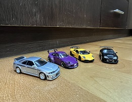

我的興趣
我的興趣十分廣泛而且都能夠持之以恆，大部分的興趣已經培養多年。
從高中我就很喜歡打籃球，也愛看NBA比賽跟關注球星，但是在大一準備新生盃的練球時，我在一次防守中遭到撞擊倒地，右手腕韌帶受了傷，長達半年都無法出力投籃跟運球，傷勢恢復後我已經失去了多年來的球感，沒有持續運動也使我體力下滑，從此之後我拾起籃球走向球場的機會屈指可數，對籃球的熱愛也轉移到觀看NBA比賽中了。
國中時期我便對電影很感興趣，除了常到電影院欣賞院線大作外，我也特別喜歡反覆品味名留影史的經典電影，像是教父三部曲我就欣賞了不下五次，在電影中除了對演員們的表演感到佩服外，更吸引我的是背後所蘊含的深意，許多佳作都像是人生寫照，在不同的時期總會有那幾部能夠感同身受或帶來啟發的電影。而這也是我進入傳播學院的原因，我從影視作品中感受到媒體對人的影響是有無限可能的。
一直以來我都對車抱有很大熱誠，或許男生都很容易被充滿機械感與流線外表的性能機器吸引，而我絕對屬於其中深深著迷的，平時我就常看汽車文化的介紹影片，也會了解型號甚至引擎運作原理。因此我也衍伸出喜歡騎車開車的興趣，操作車輛時與自己對話的感受總是令我欲罷不能。很多車款都是夢幻逸品難以親眼見到，所以我也會蒐集汽車模型，享受夢幻超跑縮小後的精緻感。

上大學後因為跟同學一起打撞球的關係，我也漸漸喜歡上撞球，而且不只停在跟朋友消遣的娛樂，而是開始關注比賽，為了精進球技我還買了自己的一套球具，有助於我在更穩定的條件下練習，一盤球雖然才少少幾顆，但卻能有數不盡的打法，這種需要思考步步為營的活動很適合我的性格，因此就算是只有我自己一個人打我也可以樂在其中。